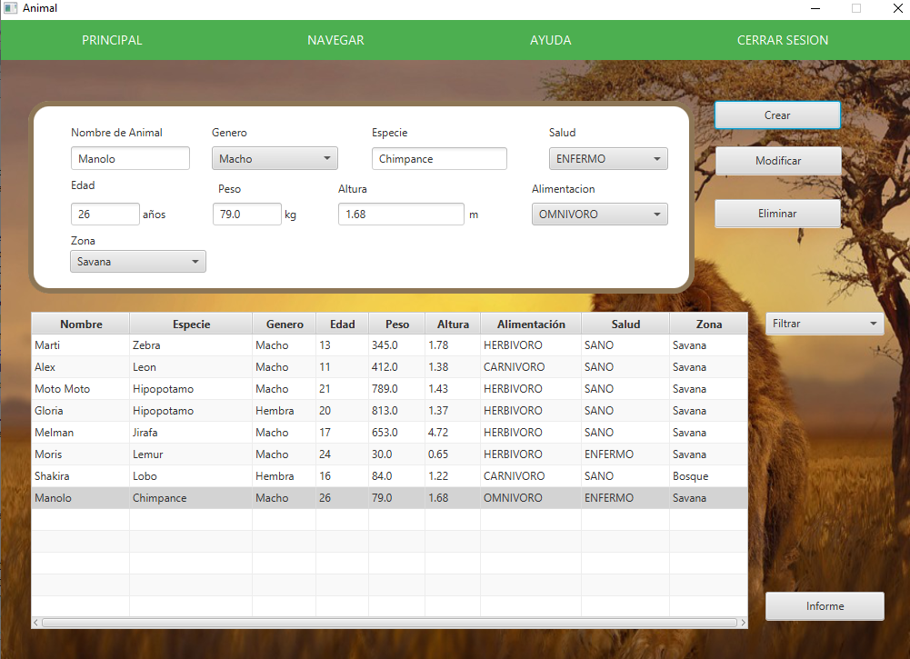

Bienvenido a la ventana de ayuda
Fig 1: Ventana Animal
Imágen de como se ve la ventana en modo Cliente, permite mirar los distintos animales, ver animales con diferentes filtrados y generar informes
Fig 2: Visualizacion de un Animal
Si se pulsa una de las filas de la tabla, se mostrara la información del animal seleccionado en el panel de arriba.
Fig 3: Filtro por Especie
Si se pulsa "Filtrar" y se seleciona "Filtrar por especie" se mostrará una caja con todas las especies de la tabla junto a un botón "buscar" en la que al seleccionar una de las especies y posteriormente pulsar en el boton de buscar la tabla se recargara con todos los animales de dicha especie. Si deseas ver todos los animales de nuevo simplemente en la caja donde pone filtrar selecciona la opcion en blanco y la tabla se recargara.
Fig 4: Filtro por Alimentación
Si se pulsa "Filtrar" y se seleciona "Filtrar por alimentacion" se mostrará una caja con los tipos de alimentación junto a un botón "buscar" en la que al seleccionar una de las alimentaciones y posteriormente pulsar en el boton de buscar la tabla se recargara con todos los animales de dicha alimentación. Si deseas ver todos los animales de nuevo simplemente en la caja donde pone filtrar selecciona la opcion en blanco y la tabla se recargara.
Fig 5: Informe
Si se pulsa "Informe" se puede ver una versión más detallada de los animales, la cual se puede guardar o imprimir a gusto.
Fig 1: Ventana
Imágen de como se ve la ventana en modo Administrador, permite mirar los distintos Animales, crear, modificar y borrarlas
Fig 2: Crear Animales
Si rellenas los campos con datos validos y correctos, al pulsarle al botón crear se creará un nuevo animal
Fig 2.1: Datos erróneos
En caso de introducir datos con formatos incorrectos y darle a crear muestra una ventana diciendote donde ha sucedido y cual es el formato correcto.
Fig 3: Borrado
Para borrar un animal, seleccione el animal a borrar y luego pulse el botón de "Eliminar" para borrarlo, antes de ejecutar la accion se le preguntara si esta seguro, si responde "Aceptar" se borrará la entrada
Fig 4: Modificar
Para modificar un animal, pulse el animal que desea modificar, los parametros del animal se colocarán en los campos y allí se podrán modifcar a gusto, una vez modifcados los campos pulse "Modificar" para hacer la acción, asegurate de no añadir datos erroneos a la hora de modificar. En la imagen anterior todavia no se ha pulsado el boton de modificar, si nos fijamos los datos que estan rodeados no son iguales, pero al pulsar modificar los datos de la tabla pasarian a ser los mismos del panel.
Fig 5: Filtro
Puedes filtrar las entradas por "Especie" y "Alimentación", para volver a mostrar todos los animales otra vez una vez hecho el filtro unicamente deberiamos pulsar en el espacio en blanco de la caja filtrar.
Fig 6: Informe
Si se pulsa "Informe" se puede ver una versión más detallada de los animales, la cual se puede guardar o imprimir a gusto